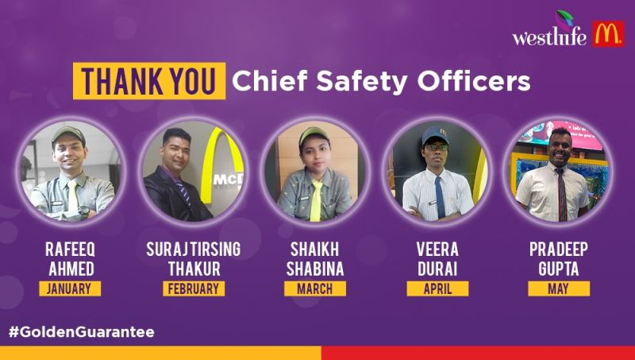
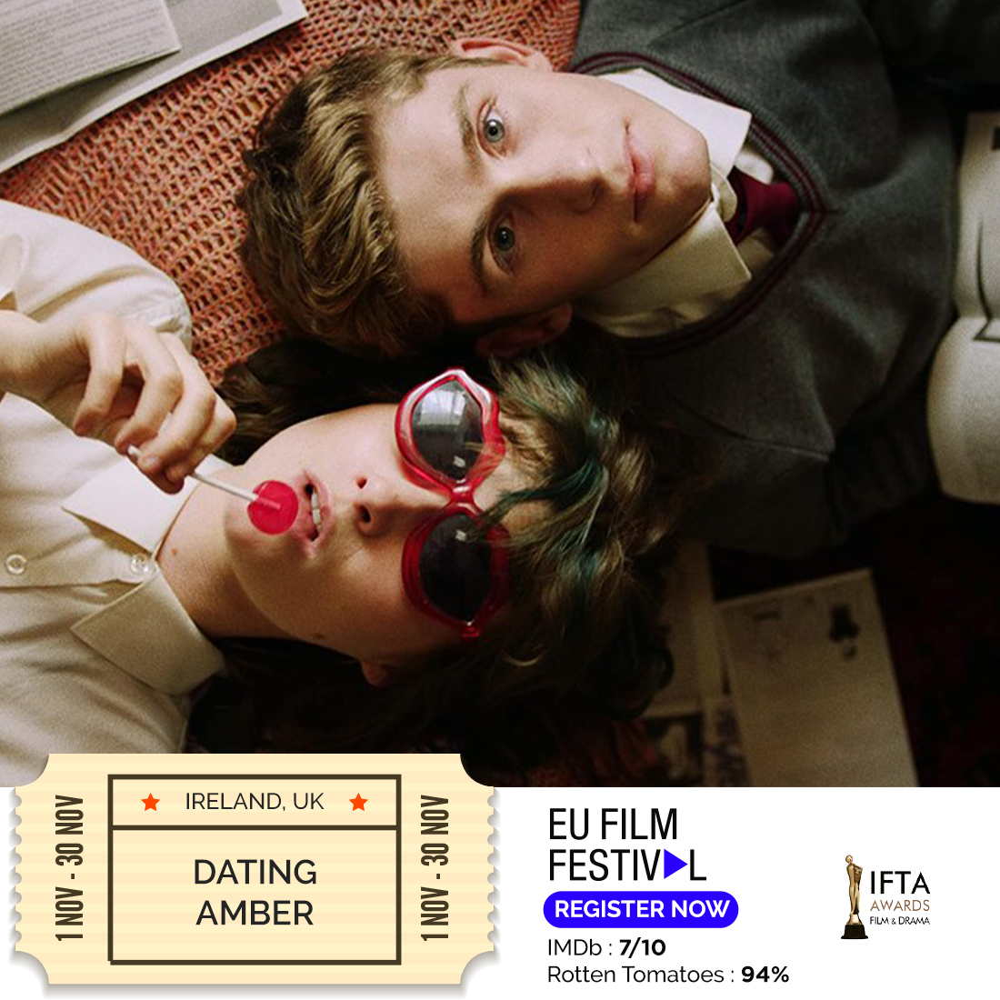
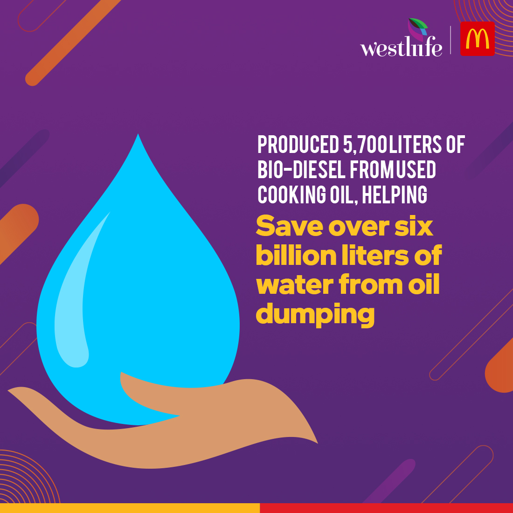
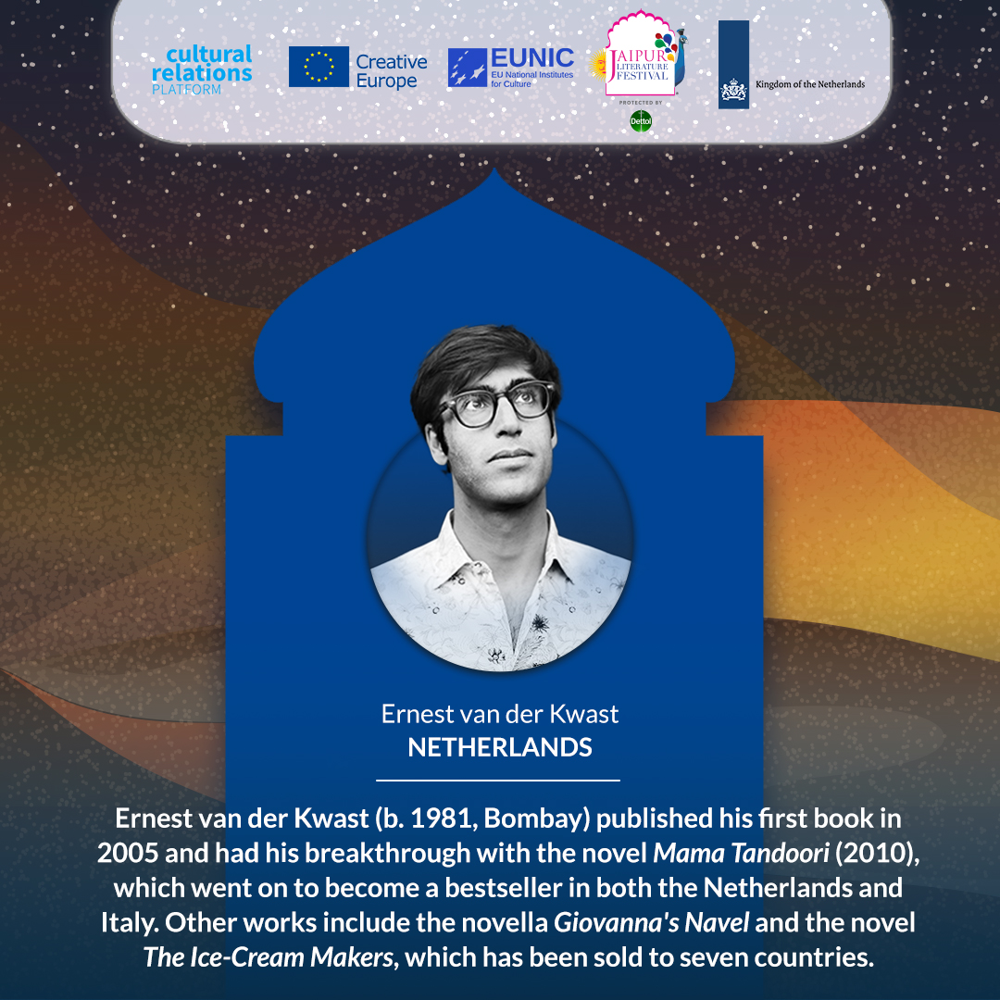
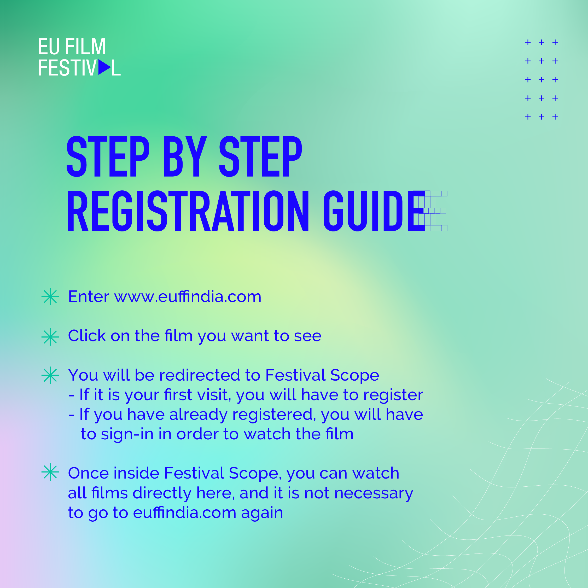

Storyboarding Sample
The EU cares a lot about the environment and is doing many things to help with
climate change. To show their teamwork with India on clean energy, my team and I
came up with a cool and fun idea: MarEU, a video inspired by the famous Mario Super
Bros game. This video, released on Earth Day, shared all the good things the EU is
playfully doing for the environment. It was like playing a fun game while learning
how the EU works hard to keep our planet healthy. I wanted everyone, young and old,
to enjoy and understand their efforts to protect the environment.
Copywriting and Storyboarding Sample
The EFF, an annual on-ground festival celebrated for its tangible experiences and
award-winning movies, faced challenges due to the mid-year lockdown blues. To revive the
spirit of award-winning cinema, we focused on maximizing viewership, converting offline
experiences, and engaging a younger audience (18-35). I spearheaded the creation of
static posts, gifs, teasers, and trailers, leveraging awards from Cannes, TIFF, etc.,
for credibility. Managing social media postings and promotion budgets, we organized
eight interactive online sessions with directors and actors. Given a list of movies, I
crafted the entire video script, selected snippets from trailers, and collaborated with
the video team on production, including choosing a fitting soundtrack.
Video Development Sample
In response to the adverse effects of COVID-19 lockdowns on girls' education and rights,
the EU launched initiatives coinciding with the International Day of the Girl Child.
Collaborating with PLAN India, the EU empowered a girl change-maker to take over its
social media accounts. My role involved crafting the video script, storyboarding,
selecting snippets, designing templates, choosing sound elements, and creating impactful
Instagram post copies. The campaign featured real-life stories, Q&A sessions, static
posts, and videos, shedding light on the pandemic's impact on girls. This collaborative
effort aimed to raise awareness and support, emphasizing the EU's commitment to
empowering girls and realizing their dreams.

Copywriting Sample
The campaign highlighted how McDonald's in southern India prioritizes safety
protocols during the COVID-19 pandemic while supporting its employees' professional
growth. My role involved crafting post copies for each social media post and
selecting the creative visuals to accompany them. I actively collaborated with
McDonald's employees, my design team, and the client to ensure the successful
execution and impact of the campaign. Through effective coordination, we aimed to
convey the commitment to safety and employee development, fostering a positive image
for McDonald's in the southern region during challenging times.

European Union Film Festival
Created vintage-style movie ticket-themed creatives for each film featured in EUFF,
showcasing IMDB ratings and award accolades.

#ScaleForGood
Designed infographics highlighting WDL's eco-friendly practices, aiming to
disseminate information about sustainability efforts in a visually engaging manner.

EU x JLF
When the EU collaborated with Jaipur Literature Fest, informative creatives were
designed to ensure consistent branding and aesthetics spotlighting participating
authors.

European Union Film Festival
Facilitated film festival registrations with informative creatives explaining how
viewers can conveniently enjoy movies from their homes.
A Quick Glance Over My Work
Social Media
Welcome to the dynamic realm of social media, where brands discover boundless
opportunities to unlock their full potential and captivate audiences worldwide.
Here, I present four dynamic facets of my work: from meticulous storyboarding to
captivating video production and engaging copywriting, each element is crafted
to elevate a brand's presence and captivate their audience's imagination!
Graphic Briefs
Ensuring brands stay true to themselves is key, and that's where my role shines.
As the go-between for clients and design teams, I make sure their visions come
to life seamlessly. With clear, punchy briefs, every creative piece hits the
mark, reflecting the client's style and identity. Here's a glimpse of how our
teamwork and my spot-on briefs keep brands consistent and strong across all
projects.
Content Management
In the whirlwind of my journey at a bustling PR agency for a year and a half,
I've encountered a fascinating array of clients, each with their own narrative.
From championing social causes to crafting entertaining spectacles and conveying
powerful messages, I've delved into a vibrant spectrum of campaigns. Here, I
unveil a glimpse into the creative journey that transformed client dreams into
captivating realities. Get ready to embark on a journey where every idea
ignited, every story unfolded, and every message resonated, leaving an
unforgettable impression on audiences far and wide.
Event Management & Online Promotions
Where Brands Shine Bright: From crafting unforgettable experiences to sparking
excitement that captivates audiences. With strategic planning and creative
flair, I aim to elevate the brand's presence, leaving a lasting impression that
resonates.